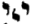

Pardes Rimmonim, English translation with the Hebrew.
We named it "The Diminishment of the Moon" because in it is explained the diminishing of the supernal Moon, and the existence of the emanation of Tiferet and Malkhut. Its chapters number six.
18:1:1 The Eighteenth Gate: The Gate of the Diminishment of the Moon.
שער יח הוא שער מיעוט הירח:
18:1:2 What is intended in this Gate is the explanation of the matter of Tiferet and Malkhut, which are hinted at in the sun and the moon, and the matter of the moon and its diminishment, according to what is found in the words of Rashbi and the other commentators.
הנרצה בשער הזה הוא בביאור ענין ת"ת ומלכות הנרמזים בשמש וירח וענין הירח והמעטתו כפי הנמצא בדברי הרשב"י ושאר המפרשים:
18:1:3 Chapter One:
פרק ראשון:
18:1:4 Since we have seen that this passage is the central point of the inquiry according to the view of Rashbi and the other commentators, we have seen fit to copy it here, for it is the established foundation of this Gate in the business of its explanation. And these are its words, in tractate Chullin (folio 60b): "Rabbi Shimon ben Pazzi pointed out a contradiction: It is written (Gen. 1:16), 'And God made the two great luminaries,' and it is written, 'the great luminary and the small luminary.' The moon said before the Holy One, blessed be He: Master of the world, is it possible for two kings to use one crown? He said to her: Go and diminish yourself. She said before Him: Master of the world, because I said a proper thing before You, shall I diminish myself? He said to her: Go and rule by day and by night. She said to Him: What is the greatness? A lamp at noon, what use is it? He said to her: Go, let Israel count days and years by you. She said to Him: The day too: it is impossible that they not count the seasons by it, as it is written (Gen. 1:14), 'and let them be for signs and for seasons, and for days and years.' He said to her: Go, let the righteous be called by your name: Jacob the small, Samuel the small, David the small. He saw that her mind was not settled. The Holy One, blessed be He, said: Bring an atonement for Me for My having diminished the moon. And this is what Resh Lakish said: Why is the goat of the New Moon different, that 'to the Lord' is said of it (Num. 28:15)? The Holy One, blessed be He, said: Let this goat be an atonement for My having diminished the moon." Thus far its words.
יען ראינו שהמאמר הזה הוא נקודת מרכז הדרוש כפי דעת הרשב"י ושאר המפרשים ראינו להעתיקו הנה שהוא יסוד מוסד אל השער הזה בעסק ביאורו וז"ל במס' חולין (ד"ס ע"ב) ר' שמעון בן פזי רמי כתיב ויעש אלהים את שני המאורות הגדולים וכתיב את המאור הגדול ואת המאור הקטן. אמרה ירח לפני הקב"ה רבש"ע אפשר לשני מלכים שישתמשו בכתר אחד. אמר לה לכי ומעטי את עצמך. אמרה לפניו רבש"ע הואיל ואמרתי לפניך דבר הגון אמעט את עצמי. אמר לה לכי ומשול ביום ובלילה. אמרה ליה מאי רבותא דשרגא בטיהרא מאי אהני. אמר לה זיל לימנו בך ישראל ימים ושנים. אמרה ליה יומא נמי אי אפשר דלא מנו ביה תקופותא דכתיב והיו לאותות ולמועדים ולימים ושנים. א"ל זיל ליקרו צדיקים על שמך יעקב הקטן שמואל הקטן דוד הקטן. חזייה דלא מיתבא דעתה, אמר הקב"ה הביאו עלי כפרה על שמעטתי את הירח והיינו דאמר ר"ל מה נשתנה שעיר של ר"ח שנאמר בו לה', אמר הקב"ה שעיר זה יהא כפרה על שמעטתי את הירח עכ"ל.
18:1:5 And in the explanation of this passage we found the author of the book Me'irat Einayim, in his introduction; and these are his words: "Know that Teshuvah [which is Binah] is the King of kings of kings. 'The kings of the everlasting arms' are the double-faced kings, who are the two kings who serve and use one crown; for you already know that the double-faced were equal, this light like that light. And when she accused, that two kings should not use one crown, she was seeking for herself, and her light was diminished, so that she became the speculum that does not shine. For Teshuvah, which is the Holy One, blessed be He, said to her: 'Go and diminish yourself.' And the Holy One, blessed be He, said (which is Tiferet, for it too is called the Holy One, blessed be He): 'Bring an atonement for Me [alai],' to Teshuvah, which is over me [alai]: 'for My having diminished the moon,' that is to say, because of me she was diminished, for through me Teshuvah said to the Atarah, 'Go and diminish yourself.' And perhaps the intent of this offering, like the other offerings, is to bring her near to Tiferet, so that she may be blessed for us. And the reason for a goat, which is the left side, and not a lamb, which is from the side of compassion, is perhaps because her principal receiving is from there, and the matter was by way of accusation, and from there it comes. And the word alai our teacher Mordechai Ashkenazi explained in this way: 'Bring an atonement for Me' is like 'before Me': that the Holy One, blessed be He, says to Israel: It is upon you to bring an atonement for your souls before Me, for My having diminished the moon (a figure for the withdrawal of the light of the Atarah). And because of this the accuser, who is the evil inclination, the darkness in you, was strengthened, and you did not merit that first light, pure and bright; for had you merited it, you would be like gods, children of the Most High. And I found written in the words of the Kabbalists that Teshuvah said 'Bring an atonement' to the one who is over me. But its explanation is the language of the first debt and loan; and if so, his saying 'for My having diminished' is not difficult, for he is the one who says 'Go and diminish yourself.' And in the Kabbalah of Sforta: Know that they were double-faced, and since they acted equally, He feared, since her dominion was equal, lest the world err and say that there are two authorities, God forbid. Thus far. But according to the view of the sage, it is possible to say double-faced from the side that the power of the moon was included in the sun; and also that that power of the moon, twinned at that time in the sun, was not mixed in the power of the sun but was recognizable; as if you were to say, by way of illustration, that milk and wine were in one vessel, and the wine is recognizable by itself, except that they touch one another. And in any case it is possible to say that the power of the moon twinned in the sun at that time was also performing the action of compassion, as appears from the words of Sforta. For how is it possible to say that one attribute performs compassion and judgment as one? Rather, certainly the sun was acting in compassion, and the moon was assisting it in the action of compassion; and therefore the moon said: Is it possible for two kings to use one crown, and to receive equally from one place, and that both of them perform only one action? For what need is there for the moon, since the sun, which is one king, suffices for this action, since the whole action is of one kind; it will not change because it is twinned with the moon. And He said to her, 'Go and diminish yourself': this is the diminishment; for at first she was acting and assisting the attribute of compassion, and now she was diminished from the attribute of compassion and became judgment. And this is what he said: 'Bring an atonement for Me for My having diminished the moon': know that you need to bring an atonement to the one who is over me, for the diminishment of the moon, which was diminished from compassion to judgment; and because of that diminishment, by which she returned to judgment, you need atonement, so that she may always be included, the effluence of compassion flowing upon her." Thus far its words.
ובבאור המאמר הזה מצאנו בעל ספר מאירת עינים בהקדמתו. וז"ל דע כי התשובה [שהיא הבינה] הוא מלך מלכי המלכים. מלכי זרועות עולם, המלכים ד"ו פרצופין שהם שני המלכים המשרתים ומשתמשים בכתר א' כי כבר ידעת כי ד"ו פרצופין שוין היו אור זה כאור זה. וכאשר קטרגה שלא ישתמשו שני מלכים בכתר א' היתה דורשה לעצמה ונתמעט אורה שנעשית אספקלריא שאינה מאירה. כי התשובה שהוא הקב"ה אמר לה לכי ומעטי את עצמך. ואמר הקב"ה שהוא הת"ת כי גם הוא נקרא הקב"ה, הביאו עלי כפרה, לתשובה שהוא עלי. לפי שמעטתי את הירח, כלומר בסבתי נתמעטה, שעל ידי אמרה התשובה לעטרה, לכי ומעטי את עצמך. ואולי כוונת קרבן הזה כמו שאר הקרבנות לקרב אותה אל הת"ת למען תתברך עלינו. וטעם שעיר שהוא הצד השמאל ולא כבש שהוא מצד הרחמים, אולי מפני שהיא עיקר קבלתה משם והיה הענין ע"ד קטרוג ומשם הוא בא. ולשון עלי, פי' רבינו מרדכי אשכנזי עד"ז הביאו עלי כפרה כמו לפני, שהקב"ה אומר לישראל עליכם להביא כפרה על נפשכם לפני לפי שמעטתי את הירח המשיל על סלוק אור העטרה. ובסבת זה נתחזק המקטרג שהוא יצה"ר חשך בכם ולא זכיתם לאותו אור הראשון הזך והבהיר. שאלו זכיתם בו הייתם כאלהים בני עליון. ומצאתי כתוב בדברי המקובלים כי התשובה היא אמרה הביאו עלי כפרה למי שעלי. אמנם פירושו לשון חוב והלואה הראשונה. וא"כ לא יקשה אמרו על שמעטתי כי הוא האומר לכי ומעטי את עצמך. ובקבלת ספורטא דע כי היו ד"ו פרצופין והיותם פועלים שווים הי' מתיירא אחר שממשלתה שוה שמא יטעו העולם לומר שיש ב' רשויות ח"ו, ע"כ. אבל דעת החכם אפשר לומר ד"ו פרצופין מצד שהיה בחמה כח הלבנה כלולה וגם שאותו כח הלבנה המותאמת באותה שעה בחמה לא היה מעורב בכח החמה אלא שהיה ניכר, כאלו תאמר דרך משל שחלב ויין היו בכלי אחד והיין לבדו ניכר אלא שנוגעין זה בזה. ומ"מ אפשר לומר שכח הלבנה המותאמת בחמה באותה שעה היתה ג"כ פועלת פעולת הרחמים כמו שנראה מדברי ספורטא. כי איך אפשר לומר שמדה א' פועלת רחמים ודין כאחד, אלא ודאי החמה היתה פועלת ברחמים והלבנה היתה מסייעת אותה בפעולת הרחמים ולכן אמרה הלבנה אפשר לשני מלכים שישתמשו בכתר אחד ושיקבלו בשוה ממקום אחד ושלא יפעלו שניהם כי אם פעולה אחת כי מה צריך הלבנה כי די בחמה שהוא מלך אחד לפעולה זו, אחר שכל הפעולה ממין אחד לא ישתנה בעבור היותה מותאמת מן הלבנה. ואמר לה לכי ומעטי את עצמך, זהו מיעוט כי מתחלתה היתה פועלת ומסייעת למדת הרחמים ועתה נתמעטה ממדת הרחמים ונעשה דין, וז"ש הביאו עלי כפרה על שמעטתי את הירח דעו כי אתם צריכים להביא כפרה למי שעלי על מיעוט הירח שנתמעטה מן הרחמים לדין, ומחמת אותו המיעוט שחזרה לדין אתם צריכים כפרה להיות תמיד כלולה משפיע עליה שפע הרחמים עכ"ל.
18:1:6 And behold, from within his words he appears to waver between the two opinions: whether we say that the moon was literally included in the sun and both of them were one power (and we found that Rabbi Bachya, on Gen. 38:30, inclines somewhat to this, according to what he explained concerning the matter of Perez and Zerah); or whether we say that there were two twinned powers, but each one by itself, like the wine and the milk in one vessel, as he goes on to explain.
והנה מתוך דבריו נראה פוסח על שתי הסעיפים אם נאמר שהיתה כלולה ממש הלבנה בחמה ושתיהם כח אחד, ומצאנו לר' בחיי (בראשית לח ל) היות דעתו נוטה קצת לזה כפי מה שביאר בענין פרץ וזרח. או אם נאמר שהיו ב' כחות מותאמות אבל היה כל א' וא' לבדו כדמות היין והחלב בכלי אחד כדמפ' ואזיל.
18:1:7 And behold, these two opinions give us no satisfaction. First, if we say that she was literally included, we would ask: in what were the ten Sefirot divided? Behold, they were nine, for Tiferet and Malkhut are as one, unified, whether in their power or in their action. And if we answer that it was because it was included of the power of maleness and the power of femaleness, as our teacher Bachya explained, this does not suffice, for in the end it was one power and one action. And even if it is included of two powers, so too all the Sefirot are included of many kinds of powers, according to their aspects and their manifestation, as explained in the preceding gates; and nevertheless we relate to one Sefirah each and every power included in all its generalities and particulars. And likewise these: although this power includes male and female, in the end they were one light and one power, and so the Sefirot would be nine and not ten, contrary to the tradition. And further, since their matter was a power of equal, unitary light, how then did the verse say "the two great luminaries," which shows that they were two luminaries, except that they were great, that is, equal? And in our opinion this is not difficult for our teacher Bachya, if we say that his intent was not that they were one power except when they were above, concealed, before their emanation to the place fitting for them, that is, on the fourth day, where the place of the moon and the sun is; but when they were emanated to their place they were two. And it is already possible to infer so from within his wording in Parashat Vayeshev, and these are his words: "It is known that the name Elohim mentioned in Bereshit is the King of the world, and it is Teshuvah," etc. "And the verse said, 'And God said, Let there be light, and there was light,' to explain that from the power of the Kingship of Heaven, which is called Elohim, these two lights were emanated; and therefore it said 'and there was light' and did not say 'and it was so,' as in the rest of the work of creation. And you should understand that the intent is not that they were literally two lights; only there were two powers in it, the one a power of maleness and the second a power of femaleness; but the first light was only one. And it is one, including the power of maleness and the power of femaleness; and from this light the sun and the moon were emanated on the fourth day, as I explained there in the order of Bereshit; and the power of maleness was emanated upon the sun and the power of femaleness upon the moon." Thus far its words.
והנה ב' הדעות האלה אין לנו נחת רוח בהם. ראשונה אם נאמר שהיתה ממש כלולה נשאל במה היו נחלקות י"ס, הא ט' הוו שהרי תפארת ומלכות הם כאחד מיוחד אם בכחם אם בפעולתם. ואם נשיב מפני שהי' כלול מכח הזכרות וכח נקבות כפי מה שביאר רבינו בחיי. זה אינו מספיק כי סוף סוף כח אחד היה ופעולה אחת היתה. ואף אם הוא כלול משתי כחות, כן גם כל הספי' כלולות מכמה מיני כחות לפי בחינותיהם ומציאותם כמבואר בשערים הקודמים ועכ"ז לא ניחס אלא לספי' א' כל כח וכח הכלול בכל כלליו ופרטיו. וכן אלה עם היות הכח הזה כולל זכר ונקבה סוף סוף אור אחד וכח אחד היו ונמצאו הספי' ט' ולא עשרה הפך הקדמת הקבלה. ועוד אחר שהיה עניינם כח אור שוה אחדיי א"כ איך אמר הכתוב את שני המאורות הגדולים כנראה שהיו שני מאורות אלא שהיו גדולים דהיינו שוים. וזה לפי דעתנו לא יקשה לרבינו בחיי אם נאמר שלא היה כוונתו שהיו כח אחד אלא בהיותם למעלה נעלמים קודם אצילותם אל מקום הראוי להם דהיינו ביום ד' ששם מקום הלבנה והחמה, אבל כאשר נאצלו אל מקומם היו שנים. וכבר אפשר לדקדק כן מתוך לשונו בפ' וישב וז"ל ידוע כי שם אלהים הנז' בבראשית הוא מלך העולם והוא התשובה וכו'. ואמר הכתוב ויאמר אלהים יהי אור ויהי אור לבאר כי מכח מלכות שמים הנקרא אלקים נאצלו ב' אורים הללו וע"כ אמר ויהי אור ולא אמר ויהי כן כבשאר מעשה בראשית. ויש לך להתבונן שאין הכונה שהיו שני אורים ממש רק ב' כחות היו בו הא' כח זכרות והב' כח נקבות אבל האור הראשון לא היה אלא אחד. והוא א' כולל כח זכרות וכח נקבות ומן האור הזה נאצלו חמה ולבנה ביום הרביעי וכמו שביארתי שם בסדר בראשית ונאצל כח הזכרות על החמה וכח הנקבות על הלבנה עכ"ל.
18:1:8 And according to the truth there is no room to object to our teacher Bachya; for it is possible that his intent is that when they were above, in Binah, they were one light and one power, as it is written, "Let there be light, and there was light," which taught that they are one light; but when they were emanated to their place they were two, each one by itself, the moon by itself and the sun by itself, as he said, "and from this light the sun and the moon were emanated on the fourth day, and the power was emanated," etc. But according to the view of the author of the book Me'irat Einayim, who holds that it is possible for there to be one power and action, it is difficult for us: in what were they distinguished so as to be two Sefirot? For by way of cause and effect it is impossible: for this is the distinction of the other Sefirot, and these two were unified in one light and one power. And since they have no distinction in cause and effect, in what are they distinguished, so as to be reckoned and rise to the count of two Sefirot? For in its including two powers there is no proof, for the whole substance of the inclusion is certainly by way of cause and effect; and moreover, this is no distinction according to his explanation, as we explained above. And also to say that both of them were recognizable, each one by itself: the matter of their action is difficult, in her saying "it is impossible for two kings to use one crown": what does she say? For there were two crowns, each one by itself. And this was already difficult for the author of the book Me'irat Einayim according to the view of Sforta, and he intended to strain and settle the matter, and he did not succeed.
ולפי האמת אין מקום להשיג על רבינו בחיי כי אפשר היות כוונתו כי בהיותם למעלה בבינה היו אור א' וכח א' כדכתיב יהי אור ויהי אור הורה שהם אור אחד אבל כשנאצלו אל מקומם היו ב' כל אחד לעצמה לבנה לעצמה חמה לעצמה כמו שאמר ומן האור הזה נאצלו חמה ולבנה ביום ד' ונאצל כח וכו'. אבל לדעת בעל ספר מאירת עינים דסבירא ליה שאפשר היות כח ופעולה אחת קשיא לן במה היו נבדלים להיותן ב' ספי' כי בדרך עלה ועלול א"א שזה הבדל שאר הספי', ושתים אלו היו מיוחדות באור א' וכח א'. ואחר שאין להם הבדל בעלה ועלול במה נבדלות להיותה נחשבות ועולות למנין ב' ספירות. כי במה שכלל ב' כחות אין ראיה כי כל עצם הכלל הוא בדרך עלה ועלול ודאי, ועוד שאין זה הבדל לפירושו כדפי' לעיל. וגם לומר שהיו שתיהם ניכרות כל א' וא' לבדה קשה ענין פעולתם באמרה א"א לשני מלכים להשתמש בכתר א' מאי קאמר שהרי ב' כתרים היו כאו"א לבדו. וכבר הוקשה זה אל בעל ס' מאירת עינים לדעת ספורטא וכיון לדחוק וליישב הענין ולא עלה בידו.
18:1:9 And further we saw that the company of the sages that the author of the book Me'irat Einayim brought all said that the matter of the double-faced and the two great luminaries is all one matter; and that the Holy One, blessed be He, sawed her apart, and likewise the diminishment of the moon, is all one matter. And this is the opposite of reason; for the matter of the double-faced, like Adam and Eve, was a lowering and a lack, and the union was not as is fitting; so that Rashbi, peace be upon him, in the Zohar (perhaps he means Bereshit, folio 35a; and see Zohar Pekudei 258b) had to give a reason for the thing: because the upper one was coupled from behind, and was not set right face to face until it was set right in the lower coupling, when the Holy One, blessed be He, sawed Eve apart. And behold, in the lower coupling it was for good, and in the upper coupling for bad, God forbid; this is certainly a difficulty. And besides this, it is difficult for me concerning them: for the double-faced expounded in the Gemara (Berakhot 61a) is that they were literally two bodies, except that they were joined at their backs until the Holy One, blessed be He, sawed them apart; and if so, how would it come up in their minds to say that they were one light? For behold, the language "double-faced" is the opposite, as we explained. And they wished to say that they were one light, so that duality would not be judged in it; and such is not the matter of the double-faced. And a difficulty already follows from this for the view of our teacher Bachya. This is what is difficult for us in the view of the rabbis, besides what is difficult for us in the matter of the inquiry itself, as we shall explain in explaining it. And apart from all this, several passages opposed to this passage at the beginning of our chapter are difficult for us, as we shall explain:
ועוד ראינו כי להקת החכמים שהביא בעל ס' מ"ע כלם אמרו כי ענין ד"ו פרצופין וב' המאורות הגדולים הכל ענין א' ומה שנסרה הקב"ה וכן מיעוט הירח הכל ענין א'. וזה הפך הסברא כי ענין ד"ו פרצופין כאדם וחוה היה פחיתות וחסרון ולא היה היחוד כראוי עד שהוצרך הרשב"י ע"ה בזהר (אולי ר"ל בראשית דף ל"ה. וע' זהר פקודי רנ"ח ע"ב) לתת טעם לדבר מפני שהיה מזווג העליון מאחורא ולא נתקן פנים אל פנים עד שנתקן בזווג התחתון שנסרה הקב"ה לחוה, והנה בזווג התחתון היה לטוב ובזווג העליון לרע ח"ו, הא ודאי קושיא. ובזולת זה קשה לי עלייהו כי ד"ו פרצופין שנדרש בגמרא (ברכות ס"א) היינו שהיו ב' גופים ממש אלא שהיו דבוקים מגביהם עד שנסרה הקב"ה, וא"כ איך יעלה על דעתם לומר שאור א' היו שהרי לשון ד"ו פרצופין איפכא הוי כדפי'. והם רצו לומר שהיו אור א' עד שלא ישפט בו השניות, ואין כן ענין ד"ו פרצופין. וכבר ימשך מזה קושיא אל דעת רבינו בחיי. זהו מה שקשה לנו אל דעת הרבנים בזולת מאי דק"ל בענין הדרוש בעצמו כמו שנבאר בפי'. ומלבד כל זה קשה לן כמה מאמרים מנגדים לזה המאמר שבריש פרקין כמו שנבאר:
18:2:1 We have seen fit in this chapter to bring two passages from the Zohar that disagree with one another in the inquiry, and further disagree with the passage of the Gemara mentioned. The first passage is on the Song of Songs, from the Zohar (Zohar Chadash, folio 84b), and these are its words: "'And God created the two great luminaries,' etc. At first there were two lights [equal, this opposite this, as the Companions have established; and we have established that they were two lights in one secret], joined as one, and they were in one weighing, so that both of them were called 'great,' as we have established. Not that the moon was at first great and supernal; but at every time that the moon stands with the sun in one secret, because of him she is called with him 'great': the tail of a lion is a lion and is called lion. The moon said before the Holy One, blessed be He: Is it possible for one king to use two crowns together? Rather, this by itself and that by itself. He said to her: I see in you that your will is to be a head to foxes; go and diminish yourself; for although you will be a head to them, you have diminution from what you were. And this is what the moon said (Song 1:7): 'Tell me, you whom my soul loves, where do you pasture': how is it possible for You to conduct the world with two crowns together? 'Where do you make [your flock] lie down at noon': for the moon is not worthy to give light, and it is impossible for You to conduct with two crowns together, with the sun and with the moon; for what light does the moon have at noon? Therefore it is impossible for You to use two crowns together. 'For why should I be as one who veils herself': how shall I be wrapped at noon, when the light and the strength of the sun go on growing strong? Behold, I am wrapped in shame before Him, and I cannot serve before You; and You, how can You conduct and use two crowns together? The Holy One, blessed be He, said to her: Behold, I know you: go and diminish yourself. 'If you do not know, O fairest among women' (Song 1:8): for you said before Me that it is impossible for Me to conduct the world with two crowns together: go and diminish yourself, and be a head to foxes. 'Go forth in the footsteps of the flock': go out and be head to all those multitudes and small hosts below, and pasture them, and conduct them, and be king of all the lower ones, and conduct each one as is fitting for him, and be ruler in the night. Certainly, go out and diminish yourself; and so it is fitting for you." Thus far its words.
ראינו בפרק זה להביא שני מאמרים מהזהר חולקים זע"ז בדרוש ועוד חולקים עם מאמר הגמ' הנ"ל. מאמר א' הוא בשה"ש מהזהר (ז"ח דף פ"ד ע"ב) וז"ל ויברא אלהים את שני המאורות הגדולים וכו'. בקדמיתא תרין נהורין הוו [שקולין דא לקבל דא כמה דאוקמוה חברין, ואוקימנא דאינון תרין נהורין הוו ברזא חדא] דבוקים כחדא והוה בשקולא חדא לאתקריא תרוייהו גדולים כמה דאוקימנא. לאו דהוה סיהרא בקדמיתא רב ועלאה אלא דבכל זמנא דסיהרא קיימת בשמשא ברזא חדא בגיניה אתקרי איהו בהדיה גדולים, זנבא דאריה אריה איהו ואריה אתקרי. אמרה סיהרא קמיה קב"ה אפשר למלכא חד לאשתמשא בתרין כתרין כחדא אלא דא בלחודוי ודא בלחודוי. א"ל חמינא בך דרעותא דילך למהוי רישא לשועלים זילי ואזעירי גרמך דהא אע"ג דאת תהוי רישא להון אזערו אית לך מכמה דהוית. ודא איהו דאמרת סיהרא הגידה לי שאהבה נפשי איכה תרעה, איכדין אפשר לך לאנהגא עלמא בתרין כתרין כחדא. איכה תרביץ בצהרים, דהא סיהרא לית היא כדאי לאנהרא וא"א לך לאנהגא בתרין כתרין כחדא בשמשא ובסיהרא דהא סיהרא מה נהורא אית לה בצהרים בג"כ א"א לך לאשתמשא בתרין כתרין כחדא. שלמה אהיה כעוטיה, איכדין אהא אנא מתעטפא בצהרים כד נהירו ותוקפא דשמשא למהוי אזיל ואתקיף הא אנא מתעטפא בכסופא קמיה ולא איכול לשמשא קמך ואנת איך תיכול לאנהגא ולאשתמשא בתרין כתרין כחדא. אמר לה הקב"ה הא ידענא ביך זילי ואזעירי גרמך אם לא תדעי לך היפה בנשים דאמרת קמאי דא"א לי לאנהגא עלמא בתרין כתרין כחדא זילי ואזעירי גרמך ותהוי רישא לשועלים. צאי לך בעקבי הצאן, פוקי והוי רישא לכל אינון אוכלוסין וחיילין זעירין דלתתא ורעי לון ואנהיגי לון והוי מלכא דכלהו תתאי ואנהיגי לכל חד כדקא חזי ליה והוי שליטא בליליא ודאי פוקי ואזעירי גרמך והכי אתחזי לך עכ"ל.
18:2:2 And there is room to scrutinize this passage. First: they said "equal," etc., "so that both of them were called great." For what is the equality in the matter of the name alone? And behold, this greatness and honor is not so much that because of this alone it would be said "Go and diminish yourself"; and what is the diminishment in the absence of the name? Second: granted, if we say that they were literally equal, we can say that the moon's intent was that the sun should descend from its place and she remain in her place, as explained on the verse (Judg. 5:31), "But let those who love Him be as the sun when it goes forth in its might"; except that the judgment turned and she descended from her place of rank; and at this she complained, and was not appeased until He said "Bring an atonement for Me," etc. But according to what Rashbi, peace be upon him, explained in this passage, that the sun was always greater and greater, if so, certainly the moon's intent was not that the sun, which was greater, should descend and she remain great; but certainly her intent was that she descend [to be a head to foxes]. And if so, how did she say "because I said before You," etc.? And likewise "Bring an atonement for Me," etc.: why was she complaining, for this was her intent from before? Third: Rashbi, peace be upon him, explained "it is impossible for one king to use two crowns," as it appears that she was stammering about "is the hand of the Lord too short to save?" (Isa. 59:1); and in the passage of the Gemara mentioned, "is it possible for two kings," etc., implies that she was stammering about the shortness of ability of the two kings, who are the sun and the moon, that they would not have the power to use one crown, which is the power above them. And although all rises to one place, nevertheless the matter is not one. And one cannot say that Rashbi disagrees with the Gemara, for this is forced, since this passage is written in the Gemara anonymously.
ויש לדקדק במאמר הזה. א' אמרו שקולין כו' לאתקרי תרווייהו גדולים. כי מהו השיקול בענין השם לבד, והנה הגדולה והכבוד הזה אינו כ"כ עד שמפני זה לבד נאמר לכי ומעטי, ומהו המיעוט בהעדר השם. ב' בשלמא אם נאמר שהיו שוים ממש נוכל לומר שהיתה כונת הירח שירד השמש ממקומו ותשאר היא במקומה כדפי' בפסוק (שופטים ה) ואוהביו כצאת השמש בגבורתו, אלא שחזר הדין וירדה היא ממקום מעלתה ועל זה נתרעמה ולא נתפייסה עד שאמר הביאו עלי וכו'. אלא לפי מה שפי' הרשב"י ע"ה במאמר הזה כי לעולם השמש היה גדול יותר ויותר א"כ ודאי שלא היתה כוונת הלבנה שתרד השמש שהיה גדול ותשאר היא גדול אלא ודאי כוונתה הי' שתרד היא [למהוי רישא לשועלים], וא"כ איך אמרה לפי שאמרתי לפניך וכו' וכן הביאו עלי וכו' מה היתה מתרעמת כי זאת היתה כונתה מקודם. ג' שהרשב"י ע"ה פי' א"א למלך אחד להשתמש בשני כתרים כנראה שהיתה מגמגמת בקוצר יד ה' מהושיע, ובמאמר הגמרא הנ"ל אפשר לשני מלכים וכו' משמע שהיתה מגמגמת על קוצר יכולת ב' המלכים שהם השמש והירח שלא יהיה להם כח להשתמש בכתר אחד שהוא הכח אשר למעלה מהם. ועם היות שהכל עולה אל מקום א' עכ"ז אין הענין א'. ואין לומר דפליג הרשב"י אגמרא, שזה דוחק כי מאמר זה נכתב בגמ' בסתם.
18:2:3 And further, Rashbi explains in many places the matter of "Bring an atonement for Me," as we shall explain. Fourth: from within these two passages it appears that the sun and the moon are two kings, or two crowns; and the one king, or the one crown, is the upper power, which it is impossible to use through them, or [for them] to be used through it; and the one who complained was the moon, who is one of the two crowns or of the two kings, according to the division of the explanations. And in the Ra'aya Meheimna (Pinchas, folio 247b) Rashbi explained a third explanation that disagrees with both of them; and these are his words: "'And on your new moons [rashei chodsheikhem, the heads of your months]' (Num. 28:11). And how many heads does the moon have? But these are two points, like this: [ ]; the lower point is the moon. Her two heads are two points, which are a segol over her. At first she is a crown over two kings, like this:
and it was a segolta. And after she said 'it is impossible for two kings to use one crown,' the Holy One, blessed be He, said to her: Go and diminish yourself; and she descended to the feet of the two kings, like this:

and this is segol: what was segolta turned into segol. And the secret of the matter: corresponding to the two points, which are two kings, it hints 'two young bulls'; and corresponding to the point, a crown over their heads, he said 'and one ram,' like one crown. After she said 'it is impossible for two kings to use one crown,' she diminished herself; so too 'and one goat of the goats for a sin offering' (Num. 28:15): the ram of Isaac turned into a goat; it was turned from compassion to judgment and was diminished. And therefore 'one goat of the goats for a sin offering,' and he did not say 'for a burnt offering,' to be a crown. And whence do we know that there is descent in the sin offering? This is what is written (Lev. 9:22), 'and he came down from offering the sin offering.' And why did he join the burnt offering with the sin offering in the descent? But to teach that the burnt offering was at first the attribute of compassion, and afterwards it turned to judgment in descent and was called sin offering; and all is one. And therefore 'Bring an atonement for Me [alai]': over me [alai] the moon was a crown, certainly, like this: וֹ; and afterwards she was diminished and descended to his feet, like this: וּ (in our version it is 'like this:
' etc., 'like this:
'). And at that time, 'Bring an atonement for Me,' it is said of her, 'she is the burnt offering [ha-olah]' (Lev. 6:2): she rose from his feet, of which it is said (Isa. 66:1), 'and the earth is My footstool,' to say of her, 'the heavens are My throne.' And this is the secret of 'a righteous one rules, the fear of God' (2 Sam. 23:3), who turns judgment to compassion. And the secret of the matter: 'the stone that the builders rejected has become the head of the corner' (Ps. 118:22), like this: הו"הי יהו"ה." Thus far its words.
ועוד כי הרשב"י במקומות הרבה מפרש ענין הביאו עלי כפרה כמו שנבאר. ד' שמתוך שני המאמרים האלה נראה כי השמש והירח הם שני מלכים או ב' כתרים והמלך או הכתר האחד הוא הכח העליון אשר א"א להיות שמושו על ידיהם או שמושם על ידו והמתרעם היתה הירח שהיא א' מהשני הכתרים או משני המלכים לפי חילוק הפירושים. וברעיא מהימנא (פנחס דף רמ"ז ע"ב) פי' הרשב"י פי' שלישי חולק על שתיהם וז"ל ובראשי חדשיכם. וכי כמה רישין אית לה לסיהרא, אלא אינון תרין נקודין כגוונא דא [] נקודא תתאה סיהרא. תרין ראשין דילה תרין נקודין דאינון עלה סגול, בקדמיתא הוא כתר על תרין מלכין כגונא דא
והות סגולתא. ולבתר דאמרת א"א לשני מלכים שישתמשו בכתר אחד אמר לה הקב"ה לכי ומעטי את עצמך ונחיתת לרגלוי דתרין מלכין כגוונא דא
והיינו סגול, מה דהוה סגולתא אתחזר סגול. ורזא דמלה, לקבל תרין נקודין דאינון תרין מלכין קא רמיז פרים בני בקר שנים, ולקבל נקודה עטרה על רישייהו אמר ואיל אחד כגון כתר א'. בתר דאמרה א"א לשני מלכים שישתמשו בכתר א' אזעירת גרמה אוף הכי ושעיר עזים א' לחטאת, איל דיצחק אתהדר שעיר אתהפך מרחמי' לדינא ואתזעיר. ובג"ד שעיר עזים אחד לחטאת ולא אמר לעולה למהוי כתר. ומנא לן דאית ירידה בחטאת, הה"ד וירד מעשות החטאת. ואמאי שתף עולה עם החטאת בירידה, אלא לאולפא דעולה הוי בקדמיתא מדת הרחמים ולבתר אתהפכת לדינא בירידה ואתקריאת חטאת וכלא חד. ובג"ד הביאו עלי כפרה, עלי הות סיהרא כתר ודאי כגוונא דא וֹ ולבתר אתמעיטת ונחתת לרגלין דיליה כגונא דא וּ (בנוסחתינו איתא כגונא דא
כו' כגונא דא
), ובזמנא דא הביאו עלי כפרה, אתמר בה היא העולה, סליקת מרגלוי דאתמר בה והארץ הדום רגלי למימר בה השמים כסאי, והאי איהו רזא צדיק מושל יראת אלדים, דמהפך דינא לרחמי. ורזא דמלא אבן מאסו הבונים היתה לראש פינה, כגונא דא הו"הי יהו"ה עכ"ל.
18:2:4 And behold, from within it it is explicitly explained that Rashbi's intent in the matter of "it is impossible for two kings" is: it is impossible for Netzach and Hod, which are the heads of the moon, as we have said, to use Malkhut, which is a crown over them. And this explanation certainly disagrees [for according to his explanation] she has no accusation against the sun; and this is forced. And our Sages, of blessed memory [in Chullin and in Zohar Chadash], explained that the moon made her accusation against the sun. And before we explain the settling of these three passages, we must explain the emanation of these two attributes from their beginning, whose matter was not explained in the Gate of the Order of the Emanation, because we designated it for this gate:
והנה מתוכו מתבאר בפי' היות כוונת הרשב"י בענין א"א לשני מלכים, פי' א"א להנצח וההוד שהם ראשי סיהרא כדקא אמרינן שישתמשו במלכות שהיא כתר על גבייהו. וזה הפירוש חולק [ודאי כי לפירושו] אין לה קטרוג עם השמש, וזה דוחק. ורז"ל [בחולין ובז"ח) פירשו שקיטרגה הלבנה עם החמה. וקודם שנבאר בישוב ג' מאמרים האלה צריכים אנו לבאר אצילות ב' מדות אלה מתחלתם שלא נתבאר ענינם בשער סדר האצילות מפני שיעדנוהו אל השער הזה:
18:3:1 What is intended in this chapter is to explain the matter of the emanation of Tiferet and Malkhut from beginning to end. And the matter is that when it arose in His primordial will, may He be exalted, to emanate His pure and holy Emanation, there was a cause from Him to bring the things into being in an order in which they are not now in their manifestation. For the intent of the Emanation was that through it His greatness would be revealed, and the children of the world, which perishes, comes to be, and passes away, could be conducted through it; and further, for another reason. And this [without it] is impossible, for several reasons: whether because of the great concealment of His holiness, or because of the shortness of the apprehension of the created entities and their being finite, as explained in the Gate of the Reason for the Emanation. And according to this, it turns out that the principal of the arising of the will was Malkhut, which conducts the world.
המכוון בפרק הזה לבאר ענין אצילות התפארת והמלכות מתחלה ועד סוף. והענין שכאשר עלה ברצונו הקדום יתעלה להאציל אצילותו הטהור והקדוש היה סבה מאתו להוות הדברים בסדר שאינם עתה במציאותם. כי להיות כוונת האצילות היה כדי שעל ידו יתגלה גדולתו ויוכלו בני העולם הכלה ההווה ונפסד להיות מונהגים על ידו, ועוד לסבה אחרת. וזה בלי אפשר לכמה סבות. אם לרוב העלם קדושתו, או לקוצר השגת הנבראים והיותם בעלי תכלית כמבואר בשער טעם האצילות. ולפ"ז נמצא כי עיקר עלות הרצון היה המלכות המנהגת העולם.
18:3:2 And behold, the greatness of our Former is the opposite of the thought of human beings, who are vanity and whose thoughts are breath. For it is not as when a man thinks of some thing, and the thing does not come to be until he toils over its existence in deed, and then it becomes a revealed being, as explained in the Gate of Tzachtzachot, chapter 3. Not so our Creator, blessed be He: His thoughts are very, very deep and mighty; and when He thought of the beings, behold, the beings, before they came into being, acquired a manifestation choicer and superior to the manifestation of the deed. And it has already been explained that Tiferet and Malkhut are the principal of the Emanation, and all is included in them; as is known that the letters Vav-He are the totality of the Emanation from Binah downward, and they are the principal of the governance, and they are the order of time: for time comes to be through the circuit, which is Vav, six extremities, and Malkhut is He; the two of them are the attribute of day and the attribute of night. And therefore in the Thought (that is, Chokhmah) that preceded the Emanation were Tiferet and Malkhut. And because Malkhut is a more revealed being, her revealing came to be before Tiferet, and Tiferet was concealed; because Malkhut is a palace to it, and she reveals the glory of the King, and she is the revealed mirror in which Tiferet is revealed. And therefore the being first revealed in the Thought, which is Chokhmah, was Tiferet and Malkhut; and this is what our Sages, of blessed memory, said (in Bereshit Rabbah, section 3, on "And there was evening and there was morning"): "This teaches that there was an order of times before this." And the order of times is Tiferet and Malkhut; and they were before Him in the secret of the incising, when He was incising the world. And because no being is grasped in Chokhmah, because it is the beginning of being Something, as we explained in the gate mentioned, therefore it was necessary to emanate Binah, and from her the beings, which are Tiferet and Malkhut, would be emanated. And with this thing we will understand the matter of "they were created double-faced": that is to say, in Chokhmah, which is Yod. And the Yod: its permutation is the Yod that is in Chokhmah, and its filling is Vav-Dalet; because the Vav, which is Tiferet, and the Dalet, which is Malkhut, were the filling of Chokhmah, and she was pregnant with them like a pregnant woman; and this is the manifestation of the Yod of Malkhut and the manifestation of the Da'at of Tiferet. And for the reason that Tiferet is over Malkhut, Malkhut was in the aspect of Chokhmah itself, and Da'at, which is Tiferet, in the aspect of the Supernal Keter; for it was in the aspect of Chokhmah near to its source, the aspect of Chokhmah that cleaves to Keter. And when the will arose to reveal more, and He saw that the beings are not revealed through Chokhmah, He emanated Binah and placed Da'at within her; and the emanation of Da'at preceded Malkhut, because the cause of the Emanation was the concealment: for because the beings were concealed, they were emanated. Therefore the concealed Tiferet came first, to be revealed in Binah; and therefore the creation of Adam came before, in the parable, that of Eve his wife; and then the double-faced were divided, and Tiferet went out alone. And there is no earlier and later in this matter, for all is in one instant; and all is a parable for priority of rank, and the concealment of the manifestation and their multiplicity, not priority of time, God forbid, for divinity is not under time; and all this is a parable to let the ear hear, as we explained in the preceding gates. And when Tiferet was emanated in Binah, the Holy One, blessed be He, emanated Malkhut from her place that is in Chokhmah, and took her from Adam, which is חכמ"ה [Chokhmah]: אד"ם [Adam] is מ"ה [Mah, 45], the four-letter name filled as יו"ד ה"א וא"ו ה"א, which amounts to Mah. And then she was in the aspect of a rib, from the side of a simple Yod, and she was built through Binah. And this is (Gen. 2:22), "And the Lord God built the rib that He took," etc.; and this name hints at Binah, as is known. "And He brought her to the man": this is Tiferet, in its [particular and revealed] place. And there He unified them with the union of husband and wife, face to face, in a complete union, as we hope it will be speedily in our days, as it is written (Isa. 30:26), "And the light of the moon shall be as the light of the sun." And there the male was above the female, and the female served beneath him, as we shall explain further. And from there she was driven away and descended to be His footstool, until His anger turns and He comforts us. And now, according to this, Malkhut turns out to precede Tiferet, and Tiferet to precede Malkhut. For in Chokhmah, in its first manifestation, Tiferet was very concealed, so that it was not recognizable at all; and the revealing of Malkhut preceded it, because she is the principal of the governance of the world, and therefore her revealing came first. And Tiferet was concealed above, near to Keter, because of its being more concealed than Malkhut, as we explained; therefore its revealing was not made manifest until its revealed place. And in its revealed place the emanation of Tiferet came first, for it went out first, for it was the cause of the revealing, as we explained. And by this the words of the House of Hillel and the House of Shammai in Chagigah (folio 12a) are right: the House of Shammai say the heavens were created first, and the House of Hillel say the earth was created first, and the Sages say heaven and earth were created as one. For all is one, and the words of all of them are true, and they are the words of the living God. For in Chokhmah the revealing of Malkhut came first: behold, the earth was created first; and in their emanation [in Binah] Tiferet came first: behold, the heavens were created first; and in truth they were created as one [as the words of the Sages], except that this was revealed before that. And with this preliminary a passage in Sefer ha-Bahir will be explained, and these are its words: "Rabbi Rechumai said: The light preceded the world, which 'clouds and thick darkness are round about Him' (Ps. 97:2), as it is said, 'And God said, Let there be light, and there was light.' They said to him: Before the forming of your son, you make a crown? He said to them: Yes. A parable: to what is the matter like? To a king who desired a son, and he found a fine crown, and praised it and lauded it, and said: Keep this for my son, for his head, for it befits him. They said to him: Does he know that his son is fit for it? He said to them: Be silent; so it arose in thought, and it is known, as it is said, 'and devisers of devices.'" Thus far its words.
והנה להיות גדולתו של יוצרנו הפך מחשבת בני אדם שהם תהו ומחשבותיהם הבל. ולא כשיחשוב אדם בדבר מהדברים [שלא] יתהווה [הדבר] עד שיטרח במציאותו במעשה ואז יהיה הוייה נגליית כמבואר בשער הצחצחות פ"ג. ולא כן בוראינו ית' מחשבותיו עמקו ועצמו למאד מאד, ובחשבו בהויות הנה ההויות קודם בואם להויה קנו מציאות מבחר ומעולה ממציאות המעשה. וכבר נתבאר כי תפארת ומלכות הם עיקר האצילות ובהם נכלל הכל כמו שנודע כי אותיות ו"ה הם כללות האצילות מבינה ולמטה והם עיקר ההנהגה והם סדר הזמן כי הזמן מתהוה ע"י ההקף שהוא ו' שש קצות, ומלכות ה'. שניהם מדת יום ומדת לילה. ולכן במחשבה (ר"ל החכמה) הקודמת אל האצי' היו הת"ת והמלכות. ומפני היות המלכות הויה יותר מתגלית נתהוה גלויה קודם הת"ת והת"ת היה נעלם מפני שהמלכות היכל אליו והיא מגלה כבוד המלך והיא מראה נגלית שבה מתגלה הת"ת. ולכן ההויה הנגלית ראשונה במחשבה שהוא החכמה היה הת"ת והמלכות, וזהו אמרם ז"ל (בב"ר פ"ג ויהי ערב ויהי בוקר) מלמד שהיה סדר זמנים קודם לכן. וסדר הזמנים הם ת"ת ומלכות. והיו לפניו בסוד החריטה שהיה מחריט העולם. ומפני שאין הויה נתפסת בחכמה מפני שהיא תחלת הישות כדפי' בשער הנזכר, לכן הוצרך להאציל הבינה וממנה יתאצלו ההויות שהם תפארת ומלכות. ועם הדבר הזה נבין ענין ד"ו פרצופין נבראו. ר"ל בחכמה שהיא הי'. והי' צירופה י' שבחכמה ומילואה ו"ד. יען כי הוא"ו שהוא הת"ת והד' שהיא המלכות הם היו מילוי החכמה ובה היתה מעוברת כאשה עוברה וזהו מציאות הי' של מלכות ומציאות הדעת של ת"ת. ומטעם שהת"ת על המלכות היתה המלכות בבחינת החכמה עצמה. והדעת שהוא הת"ת בבחי' כ"ע כי היה בבחי' החכמה הקרובה אל מקורה בחינת החכמה המתדבק בכתר. וכאשר עלה הרצון לגלות יותר וראה שאין ההויות מתגלות ע"י החכמה האציל הבינה והניח הדעת בתוכה וקדם אצילות הדעת אל המלכות מפני שסבת האצילות היה ההעלם, כי מפני שהיו ההויות נעלמות נאצלו. לכן קדם הת"ת הנעלם להתגלות בבינה ולכן קדם בריאת האדם משל חוה אשתו ואזי נחלקו הד"ו פרצופין ויצא הת"ת לבדו. ואין בענין הזה מוקדם ומאוחר כי הכל היא ברגע אחד. והכל משל אל קדימת המעלה והעלם המציאות ורבוים, לא קדימת זמן ח"ו שאין האלהות תחת הזמן. וכל זה משל לשבר את האזן כדפירשנו בשערים הקודמים. וכאשר נתאצל הת"ת בבינה האציל הקב"ה המלכות ממקומה שבחכמה ולקחה מאדם שהיא חכמ"ה אד"ם מ"ה שם בן ד' במלוי יו"ד ה"א וא"ו ה"א שעולה מ"ה ואז היתה בבחי' צלע מצד יו"ד פשוטה ונבנתה ע"י הבינה. וזהו (בראשית ב) ויבן ה' אלדים את הצלע אשר לקח וגו'. ושם זה רומז בבינה כנודע, ויביאה אל האדם זה הת"ת במקומו [המיוחד והמתגלה]. ושם יחדם יחוד איש ואשתו פנים כנגד פנים ביחוד שלם כאשר אנו מקוים שיהיה במהרה בימינו, כדכתיב (ישעיה ל כו) והיה אור הלבנה כאור החמה. ושם היה זכר עליון מהנקבה והנקבה משמשת תחתיו כאשר נבאר עוד. ומשם נטרדה וירדה להיותה הדום רגליו עד ישוב אפו וינחמנו. ועתה נמצא לפ"ז המלכות קודמת אל הת"ת, והת"ת אל המלכות. כי בחכמה במציאותו הראשון הי' הת"ת נעלם הרבה עד שלא היה ניכר כלל וקדמה אליו גלוי המלכות מפני שהיא עיקר הנהגת העולם ולכן קדמה גלויה. והת"ת היה נעלם למעלה קרוב אל הכתר מפני התעלמותו יותר מהמלכות כדפי', לכן לא נתפרסם גלויו עד מקומו הנגלה. ובמקומו הנגלה קדם אצילות הת"ת כי הוא יצא ראשונה כי הוא היה סבת ההתגלות כדפי'. ובזה צדקו דברי ב"ה וב"ש בחגיגה (דף י"ב) בש"א שמים נבראו תחלה ובה"א ארץ נבראת תחלה וחכ"א שמים וארץ כאחד נבראו. כי הכל א' ודברי כלם אמת ודברי אלדים חיים. כי בחכמה קדמה גילוי המלכות הרי ארץ נבראת תחלה, ובאצילותם [בבינה] קדם הת"ת הרי שמים נבראו תחלה, ועל האמת כאחד נבראו [כדברי חכמים] אלא שזה נגלה קודם לזה [מב]. ועם הקדמה הזאת יתבאר מאמר אחד בספר הבהיר וז"ל א"ר רחומאי האורה קדמה לעולם שענן וערפל סביביו שנאמר ויאמר אלדים יהי אור ויהי אור. אמרו לו קודם יצירת בנך תעשה עטרה. אמר להם הן, מלה"ד למלך שהתאוה לבן ומצא עטרה נאה וקלסה ושבחה ואמר שמרו זה לבני לראשו כי לו נאה. אמרו לו יודע הוא שבנו ראוי לה. אמר להם שתוק כך עלה במחשבה, ונודע. שנאמר וחושבי מחשבות עכ"ל.
18:3:3 And although at first glance his words are hard to understand, with this our preliminary it will be easy and explained. And this is its explanation. Rabbi Rechumai says that "the light" [ha-orah], which is Malkhut, as explained in the Gate From Below to Above, chapter 4, in the explanation of a passage of Sefer ha-Bahir; see there. And he called her orah and not or, to hint at the light of Malkhut, which is called or-He [the light of He]. And he proved the matter from the verse "Let there be light," etc.: for the verse told us of the manifestation of the light before the manifestation of the firmament; for this light is in Malkhut, and the firmament in Tiferet, and the light precedes the firmament. And to this he intended in saying "the light," which is Malkhut, "preceded the world [olam]," which "clouds and thick darkness are round about Him," which is Tiferet. And the explanation: it is known that the whole circuit is called olam; and for this reason Binah is called olam, for in her is the inclusion of the circuit, as we shall explain in the Glossary of Titles; and the principal of the circuit is Tiferet, including six extremities, which are the days of the circuit. And for this he said that "the light preceded the world." And so that we should not err and say that the intent is that her emanation in Thought was before its emanation in the secret of Da'at (for this is not so, as we explained), for this he said "which clouds and thick darkness are round about Him": explanation: [this refers] to the revealed manifestation of Tiferet, which is between Chesed and Gevurah, which are cloud and thick darkness; and they are the aspects that Tiferet has with Chesed and Gevurah, and they are a garment in which Tiferet is clothed. And the disciples of Rabbi Rechumai, because a true tradition was fixed in their hearts that the emanation of Tiferet precedes Malkhut, objected with the force of figurative speech: how is it possible that Malkhut precede Tiferet? For Malkhut is a vessel to Tiferet, and Tiferet is master and ruler over her; and although she is sometimes exalted over it, at the least she will be a crown on its head; and if so, in the end they asked him: Does a man make a crown for his son before the forming of the son? And this is what they asked: "Before the forming of your son, you make a crown for him?" And Rabbi Rechumai, because the tradition of the disciples is correct and true, that the emanation of Tiferet precedes the emanation of Malkhut, did not protest against them; but he answered them according to their way with a fitting and acceptable parable: "to a king who desired a son." And he was precise in using the language of "desired"; for desire is subtler than the thought of action; and likewise the manifestation of Tiferet is subtler and more concealed than the thought of action, and it is in the secret of Da'at, as we explained. "And he found a fine crown": for the crown is more revealed; and this is the reason for "and he found," for the language of finding can already properly be said of it somewhat. And he said "Keep this for my son": the intent is the language of "keeping," that it will still be concealed and kept in its concealed manifestation, which is called Yod, the crown of Tiferet, "for his head, for it befits him"; which is not found in Tiferet, that its manifestation should be revealed below as much as Malkhut, for the reason of its still being concealed. And the modest disciples, because it was still difficult for them, for they had not received the concealed manifestation of Tiferet that is above the crown, asked as those in doubt about the matter, so that he would explain much to them; and they said to him, "Does he know that his son is fit for it?" And they intended to ask as those in doubt about the tradition of the concealed Da'at. And the delightful master answered: "Be silent; so it arose in thought." And the intent is that it was already in thought, in the secret of Da'at; and this is "and it is known" [ve-noda], the language of da'at. And the intent is that the concealed manifestation of Tiferet arose in thought and was formed in the secret of Da'at; and this is ve-noda. "As it is said, 'and devisers of devices'": some read "and devising devices." And the intent, according to all the explanations, is to prove that Keter too is called thought, although at first glance we have thought only in Chokhmah. And he proved that there is thought in Keter from his saying "devices" [machashavot, thoughts], two: thought within thought. And therefore Tiferet was in the upper thought, as we explained above. And after we have explained in this chapter the matter of the emanation of Malkhut from the beginning of the Emanation to the end, we come to explain that the diminishment is not the matter of the sawing apart of Eve from Adam, as the commentators imagined:
ועם היות שלכאורה דבריו קשי ההבנה, עם הקדמתינו זאת יקל ויתבאר. וזה פי'. ר' רחומאי אומר שהאורה שהוא המלכות כמו שנתבאר בשער ממטה למעלה פ"ד בפי' מאמר א' מספר הבהיר ע"ש. וקראה אורה ולא אור לרמוז אל אור המלכות הנקרא אור ה'. והכריח הענין מפסוק יהיה אור וכו' כי הפסוק אמר לנו מציאות האור קודם מציאות הרקיע. כי האור הזה במלכות, והרקיע בת"ת, והאור קודם אל הרקיע. ולזה כוון באמרו האורה שהיא המלכות קדמה לעול"ם שענן וערפל סביביו שהוא הת"ת. ופי' שנודע כי ההקף כלו נקרא עולם, ומטעם זה נקרא הבינה עולם שבו כללו של היקף כמו שנבאר בערכי הכנויים. ועקר ההקף הוא הת"ת כולל ו' קצוות שהם ימי ההקף. ולזה אמר שהאורה קדמה לעול"ם. ומפני שלא נטעה לומר שהכונה שהיתה אצילותה במחשבה קודם לאצילתו בסוד הדעת, שזה אינו כדפי'. ולז"א שענן וערפל סביבי"ו. פי' למציאות הת"ת המתגלה, שהוא בין החסד והגבורה שהם ענן וערפל והם הבחינות שיש להת"ת עם החסד והגבורה והם לבוש שמתלבש בהם הת"ת. ותלמידי רבי רחומאי מטעם שהיה קבוע בלבם קבלה אמיתית שאצילות הת"ת קודם למלכות הקשו בתוקף המליצה כי איך אפשר שתקדם המלכות לת"ת שהרי המלכות כלי לת"ת והת"ת אדון וקצין עליה ועם היות שפעמים תתעלה עליו לכל הפחות תהיה עטרה על ראשו, וא"כ סוף סוף שאלו לו האם יעשה אדם עטרה לבנו קודם יצירת הבן. וזה ששאלו קודם יצירת בנך תעשה לו עטרה. ור' רחומאי לפי שקבלת התלמידים היא נכונה ואמיתית כי אצילות הת"ת קודם לאצילות המל' לא מיחה בידם, אלא השיב להם ע"פ דרכם במשל נאות ומתקבל למלך שהתאוה לבן. ודקדק באמרו לשון התאוה. כי התאוה היא יותר דקה ממחשבת המעשה, וכן הת"ת מציאותו דק ונעלם יותר ממחשבת המעשה והוא בסוד הדעת כדפי'. ומצא עטרה נאה כי העטרה היא יותר מתגלית, וזהו הטעם ומצ"א כי יצדק עליה כבר לשון מציאה קצת. ואמר שמרו זה לבני, הכוונה אל לשון שמור, שעוד תהיה נעלמת ושמורה במציאותה הנעלם הנקרא י' עטרת תפארת לראשו כי לו נאה מה שלא נמצא בתפארת שיהיה מציאותו מתגלה למטה כ"כ כמו המלכות מטעם העלמו עדין. והתלמידים הצנועים לפי שעדין היה קשה להם לפי שלא קבלו מציאות התפארת הנעלם אשר למעלה מהעטרה, שאלו כמסתפקים בענין כדי שיבאר להם הרבה ואמרו לו יודע שבנו ראוי לה. וכונו לשאול כמסתפקים בקבלת הדעת הנעלם. והרב הנחמד השיב שתוק כך עלה במחשבה. והכונה כי כבר היה במחשבה בסוד הדעת וזהו ונודע לשון דעת. והכונה כי מציאות הת"ת הנעלם עלה במחשבה ונצטייר בסוד הדעת וזהו ונוד"ע. שנאמר וחושבי מחשבות אית דגרסי וחשב מחשבות. והכונה לכלהו פי' להכריח שהכתר ג"כ נקרא מחשבה הגם שאין לנו לכאורה מחשבה אלא בחכמה. והכריח שיש מחשבה בכתר ממה שאמר מחשבות, תרין, מחשבה לפנים ממחשבה. ולכן במחשבה עליונה היה הת"ת כדפי' לעיל. ואחר שבארנו בפרק זה ענין אצילות המלכות מתחלת האצי' ועד סוף. נבא לבאר שאין המיעוט ענין נסירת חוה מאדם כאשר דימו המפרשים: